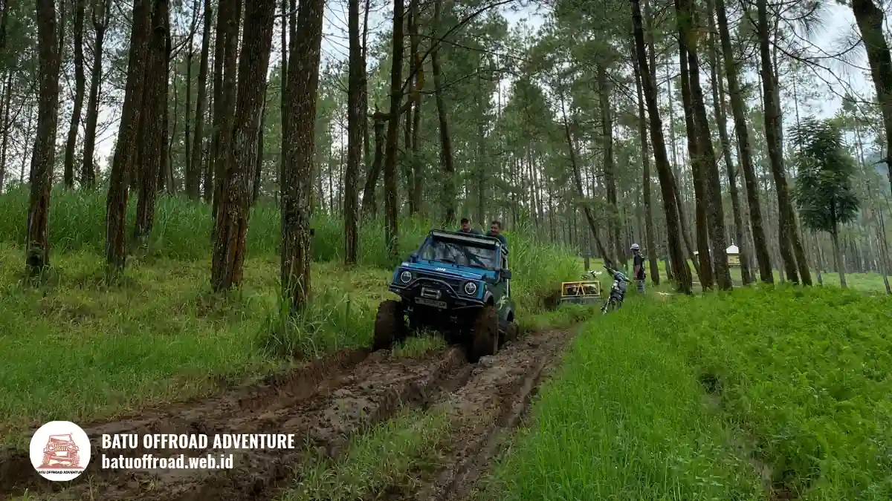

Rute ke Coban Putri dari Alun-alun Batu, Bandara, dan Stasiun Malang
Rute ke Coban Putri dimulai dari Kota Batu, Kota Malang, bandara, atau stasiun, lalu menuju basecamp kami di kawasan Temas, Kecamatan Batu. Jalannya dapat dilalui motor, mobil pribadi, dan bus rombongan hingga area parkir. Perjalanan ini menjadi pembuka dari kegiatan offroad Coban Putri Batu dengan Land Rover dan shuttle yang kami layani, sehingga rombongan sebaiknya menyusun waktu tiba dengan memperhitungkan sesi briefing dan kegiatan setelahnya.
Dari Mana Saja Titik Awal dan Pilihan Jalurnya
Titik awal paling umum menuju Coban Putri adalah Alun-alun Batu, Kota Malang, Bandara Abdul Rachman Saleh, Stasiun Malang, dan Surabaya, semuanya bermuara di Kota Batu.
Rombongan dari berbagai kota biasanya memilih jalur sesuai alat transportasinya. Dari Alun-alun Batu, perjalanan relatif singkat dan cukup mengikuti petunjuk ke arah Temas.
Dari Kota Malang, jalur mengarah ke Kota Batu terlebih dahulu, lalu dilanjutkan ke Temas. Pengunjung yang tiba di Bandara Abdul Rachman Saleh atau Stasiun Malang dapat memesan kendaraan sewa atau menggunakan layanan antar-jemput, lalu mengikuti arah ke Kota Batu.
Dari Surabaya, rombongan umumnya melewati jalur tol ke arah Malang dan melanjutkan ke Kota Batu, mirip dengan cara menuju Coban Talun dari Malang, Surabaya, dan Batu.
Waktu tempuh dapat bervariasi tergantung kondisi lalu lintas dan musim liburan, jadi kami selalu menyarankan menyisakan waktu cadangan.
Bagaimana Rute Perjalanan Kami Menuju Coban Putri
Rute kami sederhana: masuk Kota Batu, ikuti petunjuk ke kawasan Temas, lalu masuk ke jalan akses menuju basecamp Batu Offroad Adventure sebelum melanjutkan kegiatan ke area coban.
Anggap saja perjalanan ini sebagai catatan dari tim kami untuk tamu yang pertama kali datang. Begitu memasuki Kota Batu, suasana pegunungan mulai terasa lewat udara yang lebih sejuk dan kontur jalan yang naik turun. Dari pusat kota, ikuti petunjuk ke kawasan Temas.
Di sinilah basecamp kami berada, dengan alamat 4GFR+WC4, Temas, Kecamatan Batu, Kota Batu, Jawa Timur 65315. Kami menyarankan memasukkan alamat atau Plus Code tersebut ke aplikasi peta sebelum berangkat.
Setelah tiba, rombongan memarkir kendaraan, mendaftar di resepsionis, dan mengikuti briefing keselamatan. Dari sana, Land Rover dan shuttle membawa peserta menuju jalur kegiatan di sekitar coban, yang jaraknya dekat dari basecamp.
Bagaimana Kondisi Jalan dan Titik Rawan Menuju Coban Putri
Kondisi jalan menuju basecamp berupa aspal dan makadam yang diperkeras. Titik yang perlu diwaspadai adalah tanjakan khas pegunungan, ruas sempit, dan kepadatan lalu lintas pada akhir pekan.
Kawasan Batu berada di dataran tinggi, jadi tanjakan dan turunan adalah hal yang wajar. Pengemudi disarankan memeriksa rem, ban, dan bahan bakar sebelum berangkat.
Pada ruas yang sempit, kendaraan besar sebaiknya mengurangi kecepatan dan memberi jalan bergantian. Pada akhir pekan, hari libur nasional, dan musim liburan sekolah, lalu lintas menuju Batu umumnya lebih padat.
Saat hujan, permukaan jalan bisa licin, sehingga pengemudi perlu lebih berhati-hati dan menjaga jarak aman.
Peserta yang baru pertama datang biasanya menyiapkan daftar persiapan offroad Batu Malang sebelum berangkat, sementara informasi lalu lintas dan pariwisata umum dipublikasikan oleh Pemerintah Kota Batu.

Rombongan menuju Coban Putri Batu dengan Land Rover
Bagaimana Akses Motor, Mobil Pribadi, dan Bus
Motor, mobil LCGC, sedan, MPV keluarga, dan bus rombongan dapat menuju basecamp kami, karena jalan akses berupa aspal dan makadam diperkeras dengan area parkir yang luas.
Area parkir basecamp kami luas dan melayani bus maupun mobil pribadi. Untuk rombongan bus, kami menyarankan mengabari tim lewat WhatsApp sebelum hari kedatangan agar titik turun dan antrean parkir dapat diatur.
Peserta turun di dekat area resepsionis, lalu bus atau mobil menuju parkir. Pengendara motor bisa langsung parkir di area yang tersedia.
Rombongan yang tidak membawa kendaraan sendiri dapat memanfaatkan layanan shuttle transportasi kami untuk berpindah antar titik kegiatan.
Jam Berapa Waktu Berangkat yang Disarankan
Waktu berangkat yang paling nyaman adalah pagi hari, sehingga rombongan tiba di basecamp sebelum lalu lintas ramai dan masih punya waktu longgar untuk briefing dan kegiatan.
Berangkat pagi memberi beberapa keuntungan. Suhu lebih sejuk, jalan lebih lengang, dan jadwal dapat mencakup kegiatan utama, makan siang, serta waktu bebas.
Karena pilihan waktu offroad pagi, siang, atau sore memengaruhi suasana dan kenyamanan peserta, kami menyarankan pagi sebagai pilihan utama.
Rombongan dari Surabaya atau kota lain sebaiknya berangkat lebih awal lagi dan memberi cadangan waktu untuk istirahat di perjalanan. Jam yang pasti dapat kami sesuaikan dengan jadwal rombongan Anda.
Apa Fasilitas di Titik Awal dan Wisata Sepanjang Jalur
Basecamp menyediakan parkir luas, toilet bersih, musholla, kantin, dan pendopo. Sepanjang jalur, rombongan bisa menambah kunjungan ke Jatim Park 2 dan Eco Active Park.
Rombongan yang tiba lebih awal dapat memanfaatkan fasilitas Coban Putri untuk rombongan, seperti toilet, musholla, dan kantin, sambil menunggu briefing dimulai.
Selepas offroad, banyak rombongan melanjutkan perjalanan ke wisata dekat Coban Putri seperti Jatim Park 2 dan Eco Active Park, sehingga urutan rute dari basecamp ke tujuan berikutnya sebaiknya sudah dipikirkan sejak awal.
Kesimpulan
Rute ke Coban Putri tidak rumit, asalkan rombongan menuju Kota Batu, mengikuti petunjuk ke Temas, dan berangkat pagi. Basecamp kami bisa diakses motor, mobil, dan bus, dengan parkir luas dan fasilitas yang lengkap.
Offroad Coban Putri cocok untuk Anda yang ingin liburan atau kegiatan kantor yang seru namun tetap aman bersama guide berpengalaman.
Rombongan yang sudah yakin dengan rutenya tinggal memilih paket Batu Offroad yang sesuai jumlah peserta, lalu booking lewat WhatsApp +62 812-3398-9707.
FAQ
-
Dari mana titik awal terbaik menuju Coban Putri?
Titik awal terbaik bergantung pada asal rombongan. Dari Kota Batu cukup mengikuti arah Temas, sedangkan dari Malang, bandara, atau stasiun, rombongan menuju Kota Batu dahulu sebelum ke basecamp kami. -
Apakah bus besar bisa masuk ke basecamp?
Bus rombongan dapat menuju area parkir basecamp karena jalan akses berupa aspal dan makadam yang diperkeras. Kami menyarankan mengabari tim lewat WhatsApp agar titik turun dan parkir diatur. -
Apakah rute ini aman saat hujan?
Rute tetap dapat dilalui dengan lebih berhati-hati karena permukaan jalan bisa licin. Armada kami dilengkapi atap, dan pendopo permanen tersedia sebagai tempat berteduh sementara. -
Bagaimana cara menemukan basecamp di aplikasi peta?
Masukkan alamat 4GFR+WC4, Temas, Kecamatan Batu, Kota Batu, Jawa Timur 65315, atau gunakan Plus Code 4GFR+WC4. Bila ragu, hubungi kami lewat WhatsApp untuk panduan arah.
Artikel Terkait